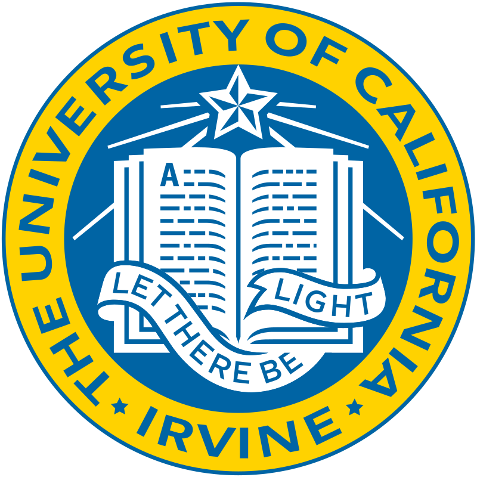

Lecturer (Assistant Professor)
Department of Computer Science
University of Exeter
Exeter, UK
Jan 2024 - Present
Honorary Lecturer
Department of Civil, Environmental, and Geomatic Engineering
University College London
London, UK
Apr 2022 - Present
Senior Research Lecturer
School of Computing, Engineering, and Digital Technologies
Teesside University
Teesside, UK
Jul 2023 - Dec 2023
Lecturer
School of Computing, Engineering, and Digital Technologies
Teesside University
Teesside, UK
Feb 2022 - Jun 2023
Invited Lecturer
Faculty of Engineering and Applied Science
Universidad de Los Andes
Santiago, Chile
Mar 2023 – Apr 2023
Research Fellow
Department of Civil, Environmental, and Geomatic Engineering
University College London
London, UK
Apr 2021 - Jan 2022
Invited Lecturer
College of Sciences and Engineering
Universidad San Francisco de Quito
Quito, Ecuador
Oct 2021 – Dec 2021
Hourly-Paid Lecturer
School of Engineering
University of Greenwich
London, UK
Sep 2021 – Oct 2021

Graduate Student Researcher
Department of Civil and Environmental Engineering
University of California-Irvine
California, USA
Jan 2018 - Mar 2021
Teaching Associate
Department of Civil and Environmental Engineering
University of California-Irvine
California, USA
Jun 2020 - Sep 2020
Teaching Assistant
Department of Civil and Environmental Engineering
University of California-Irvine
California, USA
Sep 2017 - May 2020